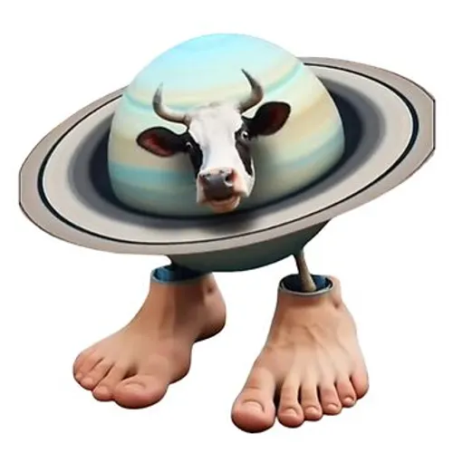

La vaca saturno saturnita
Saturno Saturnita the Cow is an absurd and surreal character that has gone viral within Italian brainrot culture, a type of aesthetic and chaotic meme that blends kawaii, galactic, and comically incoherent elements. It was created on February 6, 2025, by the TikTok user @ofuscabreno. The character is a giant cow whose body is the planet Saturn, with rings orbiting its torso, a calf's head, and human feet (with six toes on the right foot, according to some versions).